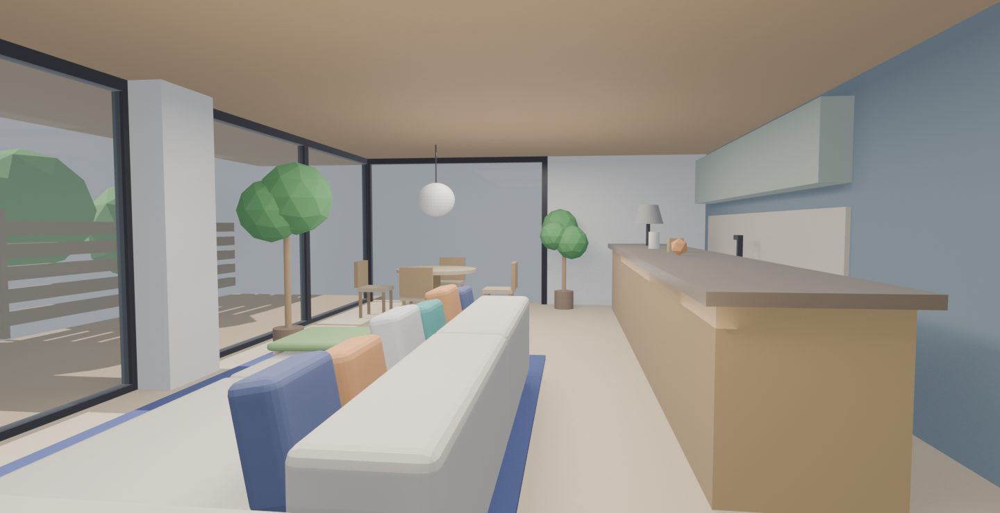
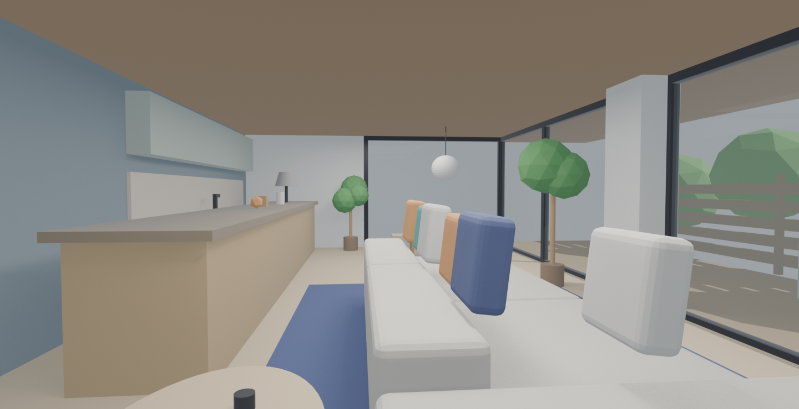

実在の内観写真を参考にした3Dモデリング検証
— 積水ハウス「リエゾン」風LDK
使用したプロンプト
PROMPT
また新規プロジェクトとして、今度は外観ではなく下記の内観をモデリングして https://www.sekisuihouse.co.jp/liaison/region_lia04/
※ 参照ページのメインビジュアル画像を取得・分析し、写真と同じ構図・要素で再現。
結果（レンダリング）


処理統計
約22分
AI処理時間（合計）
1回
プロンプト数
約10.7万
出力トークン
約974万
入力トークン（累計）
約95%
キャッシュ読込率
Fable 5
使用モデル
※ セッションログ（トランスクリプト）から集計（途中再開1回を含む）。入力トークンの大部分はプロンプトキャッシュからの読み込み（約924万トークン）で、実際の課金対象は大幅に少なくなります。処理時間はAIが応答・ツール実行していた時間の合計です。
※ 上記はモデリング作業のみの数値です。本サイトへの掲載・公開作業（外観・内観の2ページ制作＋統計集計＋デプロイ障害対応、Claude Fable 5）は別途 合計 約39分・出力 約10.1万トークン・入力 約1,709万トークン（キャッシュ読込率 約94%）でした。
再現した内観の特徴
- 木張り天井×ライトオーク床 — 開放的な横長LDK
- 黒スリムサッシの全面ガラス — 左面いっぱい＋白い構造柱
- 屋外まで再現 — ウッドデッキ・横格子フェンス・庭の緑・デッキチェア
- ロー・モジュールソファ — ベージュ本体＋ネイビー／オレンジ／白／ティールのクッション
- ネイビーのラグ＋楕円ローテーブル — コーヒーカップ・木のおもちゃ付き
- アイランドカウンター — 長いオーク木目＋グレーシェードのテーブルランプ
- キッチン — セージグリーン吊戸棚・ブルーグレー壁・タイルバックスプラッシュ
- ダイニング＋照明 — 丸テーブル＋チェア4脚、白い提灯型ペンダントライト